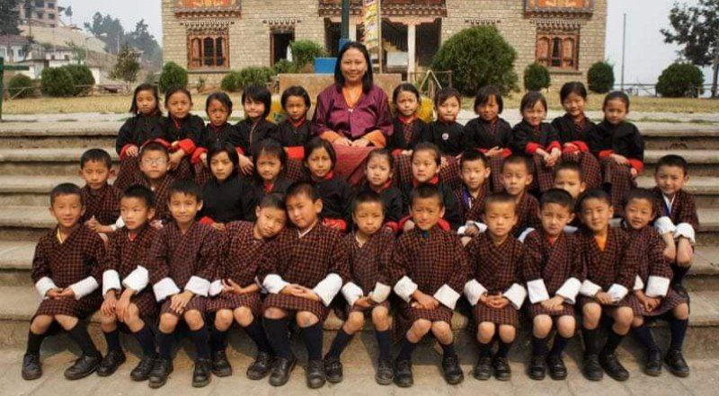
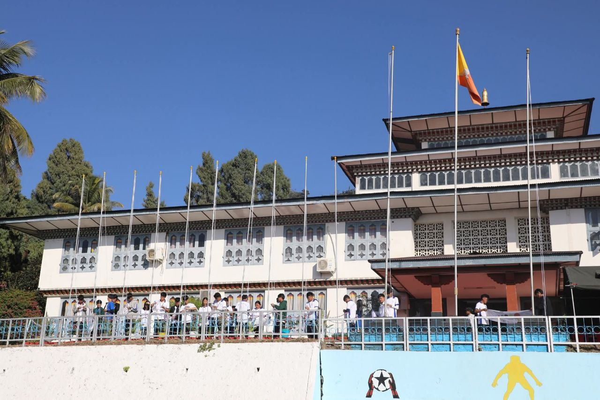

Education
Mongar Lower Secondary School – PP to 8
Time: 2010 – 2018
Sonamgang Middle Secondary School – Class 9 to 10
Time: 2019 – 2020

Phuntsholing Higher Secondary School – Class 11 to 12
Time: 2021 – 2022

Samtse College of Education – B.Ed in ICT (3rd year)
Time: 2023 – 2027
